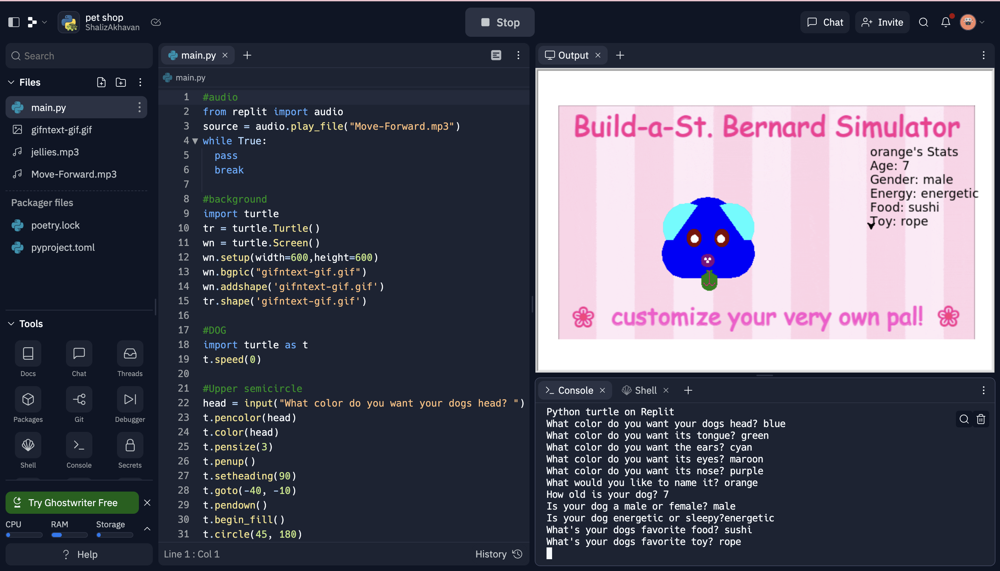
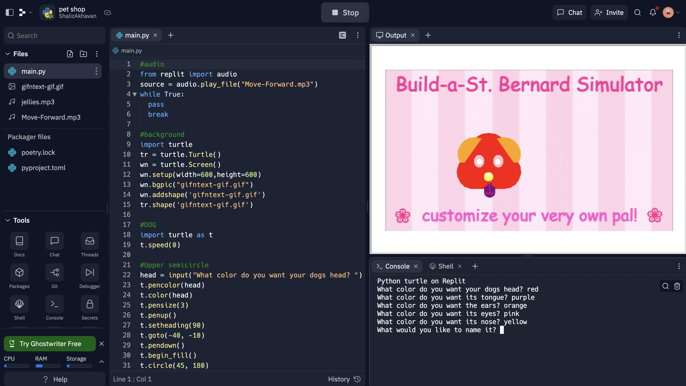
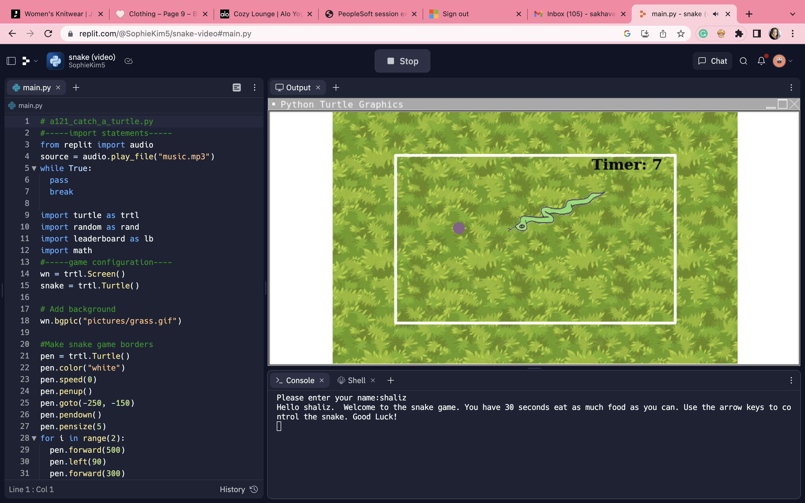
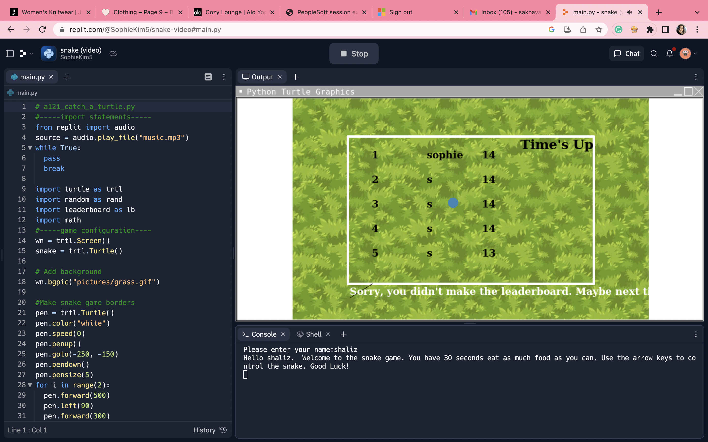
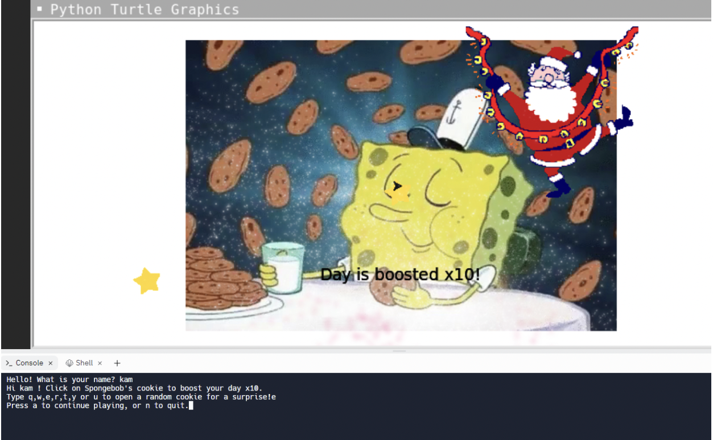
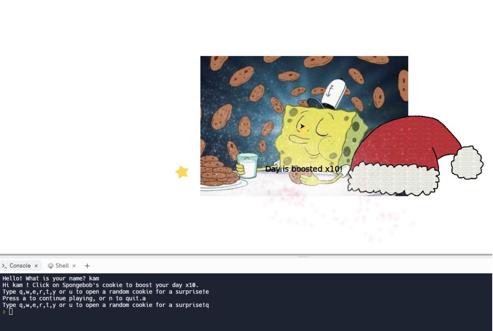
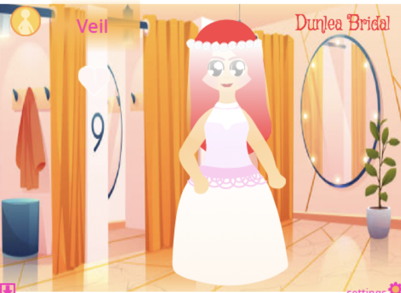
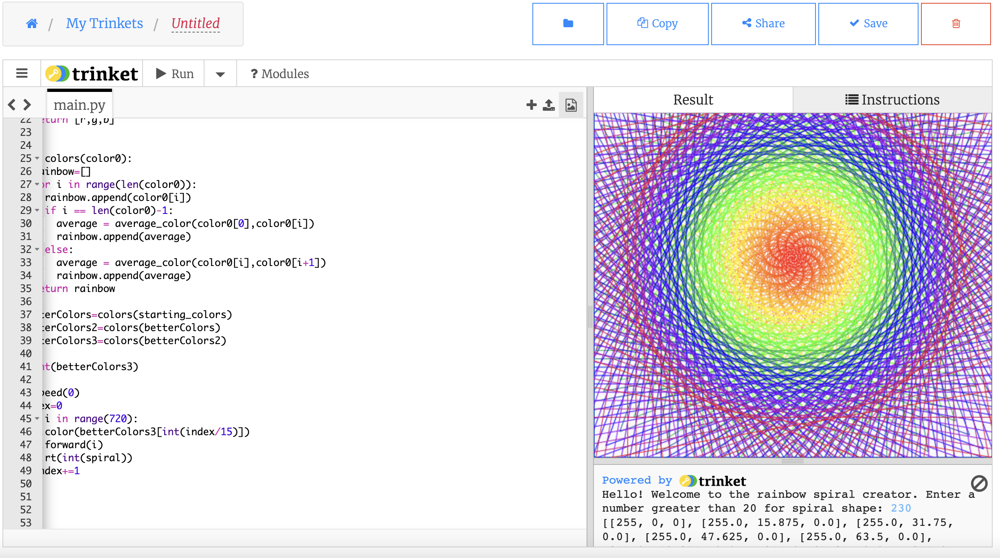
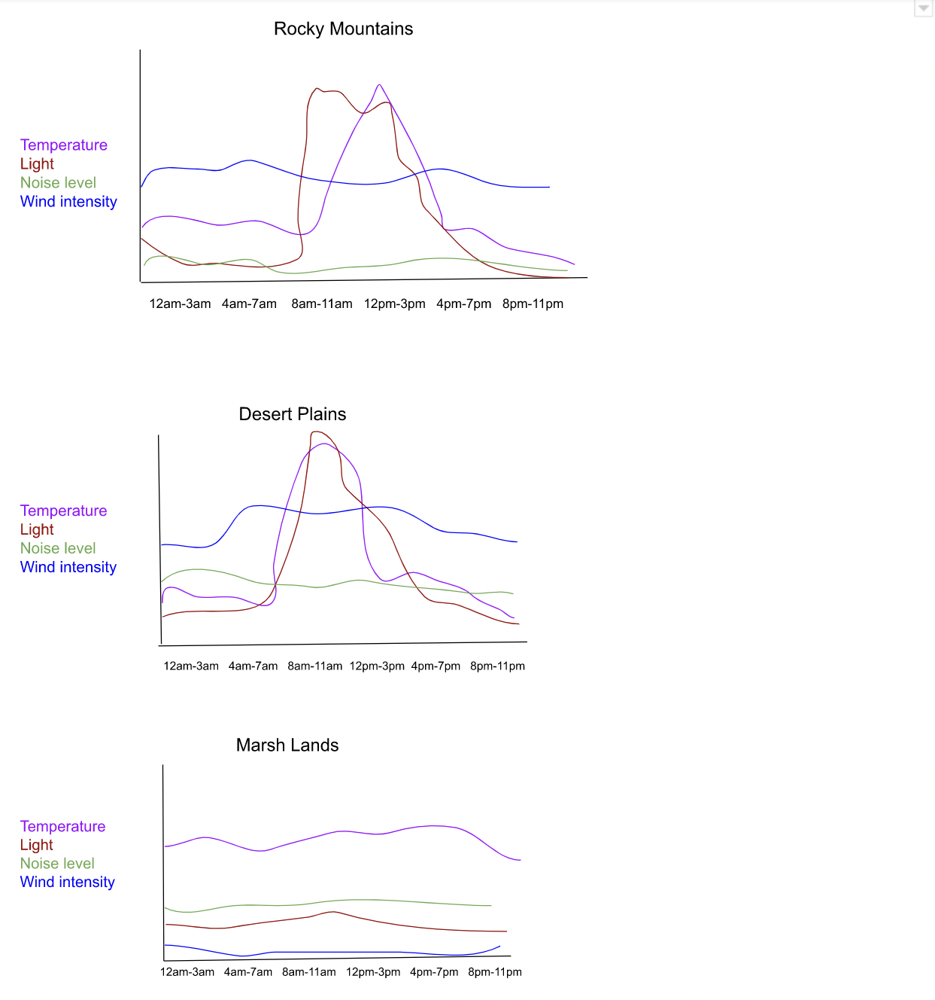
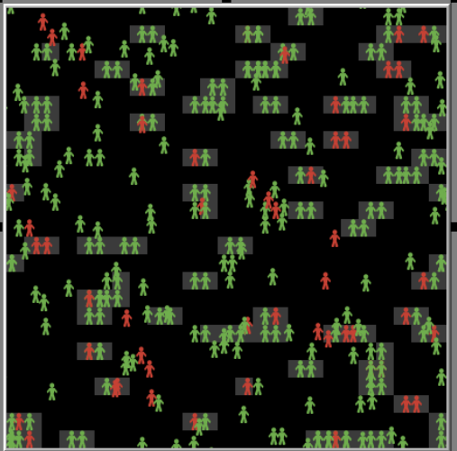

Home
Portfolio
About Me
This is my Portfolio Page!
Python project with Parmida
Link to our Pet Simulator


My first project in APCSP 2022-23 was to create a small game using the drawing turtle.
You are able to pick the color of your dogs ears, nose, eyes, fur, and mouth.
After you color your dog, you can name ist and give it characteristics.
Creating a game with Sophie
Link to the Snake game


This project was a little more difficult than the first. It was inspired by the google snake game where you eat apples and grow your tail.
The point of the game is to eat as many colored fruits as you can before the timer runs out. After eating a fruit, you snakes speed increases.
The user will have their name displayed on the leaderboard if they eat a certain amount of fruits.
Children's hospital e-card with Claire!
Link to the e-card


This project was an e-card intended for kids at a children's hospital.
It has a Christmas theme for the Holiday season.
You click on the card for a surprise and press keys to see cute Christmas gifs.
Scratch project with Claire!
Link to Scratch Project

We worked on another project for experimental purposes.
The project is a simple platformer game using the program Scratch.
The assets were mostly provided by Scratch.
Spiral Project by Me
Link to Spiral

This was my favorite project because I wasn't forced to collaborate.
In this game, you enter a number that represents the amount of degrees of turn, which changes the shape of your spiral.
Data Analyzing Project with Aryan

In this project, we used google sheets in order to analyze data and create charts.
Netlogo Project with Aryan
Link to Presentation

In our final project, we used Netlogo software in order to analyze a simulation.
The simulation we studied was the spread of HIV. We identified the turtles and patches in the simulation.